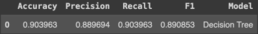

Code
import numpy as np
import pandas as pd
from itables import show
city_df = pd.read_csv('data/city_level.csv')Here we consolidate our data and results from our exploratory analyses to answer our research questions and ultimately provide for multiple facets within the brewery community.
Using datasets featured in our exploratory analysis, we merged them together in a format conducive to begin building models.
Most columns are boolean or numeric based already, but some columns were kept in categorical format for additional exploratory analysis.
Additionally, some entries contain missing values that we’ve kept in effort to prevent information loss. We’ll test different subsets of columns and rows to produce the best models.
The consolidation process can be found here.
| city | city_brewery_count | state | state_brewery_count | bar | brewpub | closed | contract | large | location | micro | nano | planning | proprietor | regional | taproom | college_town | major_city | state_national_park_count | national_park_vistors | ski_resort | ski_resort_count | tech_city | total population | % age 21+ | % age 65+ | % race - white | % race - black | % race - american native | % race - asian | % race - pacific islander | % race - other | % race - hispanic/latino | % male | 2021 median income | region | brewery_concentration | per_capita_ranked | custom_ranked |
|---|---|---|---|---|---|---|---|---|---|---|---|---|---|---|---|---|---|---|---|---|---|---|---|---|---|---|---|---|---|---|---|---|---|---|---|---|---|---|
| Loading... (need help?) |
Through our exploratory analysis, we identified 5 different city features that may impact the frequency of breweries. The features we identified were the number of ski resorts in the state that the brewery is located in, number of national parks in the state that the brewery is located in, and whether the location is considered a tech hub, a college town, or a major city. We represented tech hubs, college towns, and major cities with Boolean values where a 1 meant the location of the brewery did meet that characteristic and a 0 meant the location did not meet that characteristic.
First, we began by implementing a PCA analysis to check the relationships between our variables and identify any redundancy in our dataset. The starting dataset can be viewed above. We implemented data preprocessing and a snippet of the dataset can be viewed below.
The PCA process was then implemented and the cumulative variance table can be viewed below, as well as the individual variance explained by each principal component.
The principal components were then mapped against each other as we can see below.
Looking at the PCA plots, we can definitely see that there is some sort of pattern going on within our dataset. In the first plot, we see pretty distinct vertical lines which indicate clusters of data that are separated among PC1, though they appear to vary more among PC2. This may be due to our boolean variables influencing the variation of PC1. We see a somewhat similar occurrence in the PC2 and PC3 plot, however here we see clustering rather than distinct lines, which may indicate subsets of the data that share similar characteristics. Finally, we see diagonal lines in the bottom two PC plots, indicating that there may be correlations between the variables of our datasets.
To analyze our model further, we began with implementing a linear regression of the 5 identified city features mentioned above. Using scikit-learn’s linear regression feature, a regression model was identified with the following coefficients to predict city brewery count.
We can see that being a tech hub was associated with the greatest increase in brewery count. Holding all features constant, being a tech city is associated with an increase of about 27 breweries on average. The next most influential feature appears to be whether or not the city was considered a major city. We see that being a major city is associated with an increase of about 6 breweries on average. Next, we see that being a college town is associated with an increase of almost 3 breweries on average. The relationships between the number of ski resorts in a state and breweries, and the number of national parks in the state and breweries are positive but seem to be quite small.
Ultimately, this gave us some insight into how our 5 selected features relate to the number of breweries in a city, but the details of the model were minimal. To dive a bit deeper into the details, we implemented linear regression using statsmodels OLS module. The output for the full model with all features can be viewed below.
Interestingly, our \(R^2\) isn’t very high at 0.459 and two of our coefficients are insignificant at the \(\alpha = 0.05\) level. Our MSPE for the full model was calculated to be 17.183. We implemented backwards selection to see if the model would improve. The first step is to remove state_national_park_count as that feature has the highest p-value. The output for the reduced model can be viewed below.
Our \(R^2\) for this reduced model remains at 0.459 and the MSPE was calculated to be 17.199. However we are still seeing that one of our coefficients, ski_resort_count, is statistically insignificant. The next step in the backward selection process is to remove that feature. The output for the next reduced model can be viewed below.
Here we see that all of our features are statistically significant, but our \(R^2\) for the final reduced model has decreased slightly to 0.458 and the MSPE for this model was calculated to be 17.283.
Overall, we see that our model captures around 45.8% of the variability in the city_brewery_count. It appears that some of the city features we identified as impacting brewery count are likely to be influential, but do not capture the entire story.
Namely, out of our 5 starting features, brewery count per city is most influenced by tech hubs, major cities, and college towns.
Note that the best fitting model was saved as a pickle file, and can be found here.
Next, we will look at other model types to explore how we can improve our analyses.
In this section, we’ll create a defintion of hotspots and then create a classification model to predict how much of a hotspot a given city is (or should be).
Next, we will investigate the power of the city features and population in identifying brewery hotspots. For our training and testing, we need to identify a measure to quantify these hot spots.
There are two methods that we identified for measuring top brewery hot spots.
Both of these methods are ways that we can quantify brewery hot spots. When we review the outcomes of these ranking metrics, we find that the top rank of the Breweries per Capita yields many small towns that only have 1 or 2 breweries and excludes many very well known brewery locations such as Portland, Oregon (since Portland has such a large population, Breweries per capita calculated very low).
The data representing the top tier brewery hotspots calculated with the Total brewery count follows much more logically with our understanding of current brewery hot spots in the US. To avoid challenges with classifying cities with 1 or 2 breweries as hot spots, we will proceed with the analysis using the rank based on Total Brewery Count by city with one notable exception: all cities with less than 3 breweries will be classified a 1 on the 1-6 Brewery Hotspot ranking. The remainder of our analysis will use this custom ranking to assess our models ability to classify towns into the proper ranks. We hope to be able to clearly distinguish cities with a high rank of 6, indicating a sure brewery hotspot.
Now that we have established a metric for quantifying how much of a hotspot each city is, we can proceed to implementing models that can train on this data. We start by asking if common city features (college towns, tech hubs, major cities, national parks, and ski resorts) and population can help predict if a town is high or low on the brewery hotspot scale (1:low - 6:high).
To start our analysis, we will reduce our master data set to only the necessary columns:
Using this data, we implemented preliminary modeling using the following techniques:
This work can be reviewed here. An initial unrefined model of each of these was used and the final results were compared.
The metrics we’ll be reporting on are:
The following results were attained.
These results have been reorder by F1-Score to see the highest performing models. We can plot these results for a more visual sense of highest performing models as well.
Naive Bayes, SVM, and Linear Discriminant Analysis were the top performers in the initial testing based on their F1-Score. We followed these tests with more detailed hypertuning to maximize their performance. We utilized the GridSearchCV function to run each model under a series of potential parameters settings.
The best parameters for the Naive Bayes classification were:
The best parameters for the Support Vector Machine (SVM) classification were:
The best parameters for the Linear Discriminant Analysis classification were:
The parameters of each best performing model were used in final refined models and yielded these results using the test data.
The Naive Bayes classification model performed the best out of the front runners based on the F1-Score, although each of these models are performing quite similarly in terms of accuracy, precision and recall.
The results here show that our models can generally calculate accurate city ranking in about 85-86% of cases. This is decent, but opens up a conversation on using more of our available data to classify these cities.
Note that the best fitting model was saved as a pickle file, and can be found here.
In the next section, we will expand our models to use additional data.
Returning back to our initial dataset, we’ll perform classification using more features to see if we can create a better performing model.
We will want to perform the following in preparation for modeling:
city (unique identifiers)state (51 more columns don’t seem necessary, especially when there is state specific data)2021 median income (86.4% missing values)brewery_concentration (a variable created from population and city brewery count)per_capita_ranked (a variable crated from brewery_concentration)city_brewery_count (basis for custom_ranked)regionDue to
city_brewery_countbeing used in creating the hotspot criteria (ranked 1-6), it was removed for modeling.
After this process, our dataset is ready for modeling. Here are the first 10 rows of this modeling dataset:
| state_brewery_count | bar | brewpub | closed | contract | large | location | micro | nano | planning | proprietor | regional | taproom | college_town | major_city | state_national_park_count | national_park_vistors | ski_resort | ski_resort_count | tech_city | total population | % age 21+ | % age 65+ | % race - white | % race - black | % race - american native | % race - asian | % race - pacific islander | % race - other | % race - hispanic/latino | % male | ranked | region_northeast | region_south | region_west |
|---|---|---|---|---|---|---|---|---|---|---|---|---|---|---|---|---|---|---|---|---|---|---|---|---|---|---|---|---|---|---|---|---|---|---|
| Loading... (need help?) |
Now that we have defined a hotspot ranking system and prepared our dataset for modeling, it’s time to create some classification models!
The complete classification modeling process can be found here.
Our modeling process will consist of:
The metrics we’ll be reporting on are:
Using the sklearn library, the default classification algorithms we’ll be testing are:
DecisionTreeClassifier()LogisticRegression()KNeighborsClassifier()VC()GaussianNB()LinearDiscriminantAnalysis()After performing the default algorithms, we found that the DecisionTreeClassifier() performed the best across the metrics Accuracy, Precision, Recall, and F1-Score for a non-scaled data single-run. Several of the other classifiers also performed well. Note that even though this was supposed to be strictly a default algorithm section, LogisticRegression() required a change to the max_iter parameter to even run.
Here is a printout of the results:
| accuracy | precision | recall | f1 | model |
|---|---|---|---|---|
| Loading... (need help?) |
Next, we’ll perform the same process with the default algorithms, this time using scaled data applied with StandardScaler().
After performing the default algorithms, we found that the LogisticRegression() performed the best across the metrics Accuracy, Precision, Recall, and F1-Score for a scaled data single-run. Several of the other classifiers also performed well. Note that even though this was supposed to be strictly a default algorithm section, LogisticRegression() required a change to the max_iter parameter to even run.
Here is a printout of the results:
| accuracy | precision | recall | f1 | model |
|---|---|---|---|---|
| Loading... (need help?) |
Default Algorithms with Non-Scaled Data
Default Algorithms with Scaled Data
To summarize, DecisionTreeClassifier() performed the best for a non-scaled data single-run and LogisticRegression() performed the best for a scaled data single-run.
Here is a visualization of the top performers from each data type:
Using the sklearn library, we can use GridSearchCV() to test a multitude of different combinations for algorithms.
For DecisionTreeClassifier() (non-scaled data), we will test the following parameters:
The results across all possible combinations are as follows:
| mean_fit_time | std_fit_time | mean_score_time | std_score_time | param_class_weight | param_criterion | param_max_depth | param_max_features | param_splitter | params | split0_test_score | split1_test_score | split2_test_score | split3_test_score | split4_test_score | mean_test_score | std_test_score | rank_test_score |
|---|---|---|---|---|---|---|---|---|---|---|---|---|---|---|---|---|---|
| Loading... (need help?) |
From this process, we deduced that the best parameters for this model are:
Namely, using entropy as the criterion and max_depth of 6 resulted in the best best model for the DecisionTreeClassifier() (non-scaled data).
For LogisticRegression() (scaled data), we will test the following parameters:
The results across all possible combinations are as follows:
| mean_fit_time | std_fit_time | mean_score_time | std_score_time | param_class_weight | param_criterion | param_max_depth | param_max_features | param_splitter | params | split0_test_score | split1_test_score | split2_test_score | split3_test_score | split4_test_score | mean_test_score | std_test_score | rank_test_score |
|---|---|---|---|---|---|---|---|---|---|---|---|---|---|---|---|---|---|
| Loading... (need help?) |
From this process, we deduced that the best parameters for this model are:
Namely, using max_iter of 10000, penalty of l1, and solver as saga resulted in the best best model for the LogisticRegression() (scaled data).
Comparing our metrics for the two best models resulted in:
| Accuracy | Precision | Recall | F1 | Model |
|---|---|---|---|---|
| Loading... (need help?) |
Visualizing the best results:
Overall, LogisticRegression() with scaled data performs the best with scores in Accuracy, Precision, Recall, F1-Score in the mid-90s.
One final note is that the overall scores for the best DecisionTreeClassifier() are lower than the originally run model. This is due to how GridSearchCV() tests models, which is through cross validation. The default (which we had ran the models through) uses 5-fold cross validation. This means that the initial data is randomly partitioned into 5 mutually exclusive subsets (folds), each of approximately equal size, and then training and testing are performed 5 times [1]. This helps in assuring a better model than just using a single split. Although not produced during the timeframe of this project, with how the scores for the DecisionTreeClassifier() changed, and how much of an increase LogisticRegression() received, it may be worth utilizing GridSearchCV() across more of the models at a later time.
Note that the best fitting model was saved as a pickle file, and can be found here.
Using the full data set for an expanded classification model has proven to strengthen our insights greatly. We know that having all this data (current brewery counts/types, city features, understanding of population) can therefore help us classify cities within our ranked levels of hotspots. It is Business 101 that you should do your research and collect this information if you are planning to start a business anywhere.
We wanted to provide a clear and helpful resource for any current or potential business owners looking for their next brewery location. To do this, we’ve constructed a decision tree that will help to put market research to good use. We utilized GridSearchCV again to model our decision tree using different combinations of parameters. Keeping in mind that this model should be succinct and usable to the human eye, the max_depth of the model was capped at 4 to maintain a manageable tree size. Limiting this parameter also sacrifices some of the accuracy of the model, so we keep careful watch on the performance metrics with this reduced depth.
The best performing decision tree used the following parameters:
Note that the best fitting model was saved as a pickle file, and can be found here.
This model allowed us to achieve strong performance at a very realistic/approachable scale.

This model requires users to attain 4 key pieces of information to make their decisions:
They will be able to see the classification of their prospective location and whether that is a known brewery hotspot(6), on the rise(4-5), or lower on the ranking scale.
This decision tree can help to inform brewery owners about the city they are thinking of opening a new location in. Cities ranking 4, 5, or 6 on the scale have demonstrated success and interest in the brewery scene and these may be good spots to invest in. Keep in mind though that the Rank 6 cities may also have more brewery competition!